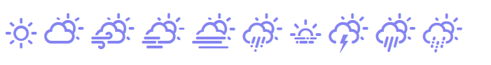

The package adds support for the weather-icons library.

Installation
NOT YET!!
You can install the released version of weathericons from CRAN with:
or the development version with:
Example
Basic examples to create weathericons:
library(weathericons)
weathericon("wi-humidity")
weathericon("wi-forecast-io-rain")
weathericon("wi wi-yahoo-7", rotate = "90")
weathericon("wi wi-yahoo-7", flip = "vertical")
weathericon("wi wi-wind", towards = "sse")
weathericon("wi-wind", from = "sse")
weathericon("wi wi-wind", towards = 40)
weathericon("wi wi-wind", from = 40)List all icons:
Customize icons example with CSS:
shiny::runApp(system.file("examples/app_classes.R", package = "weathericons"),
display.mode = "showcase")Use JS functions and inline styling, please run this shiny-app
shiny::runApp(system.file("examples/js_functions.R", package = "weathericons"),
display.mode="showcase")Leaflet popups and labels with weathericons: